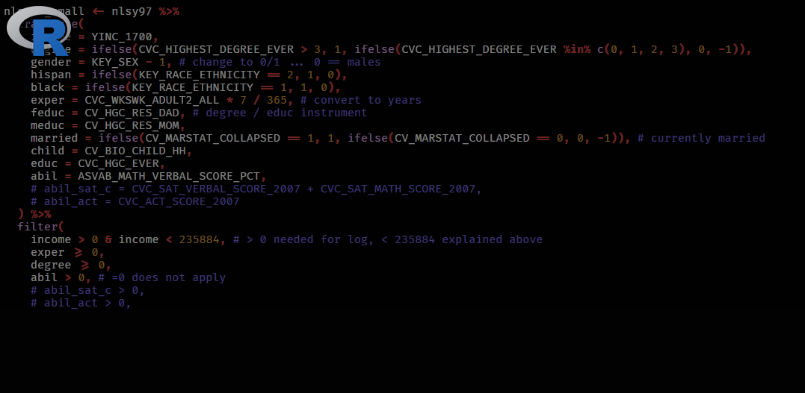
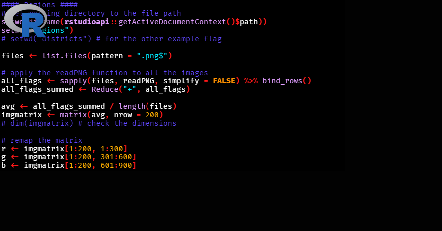
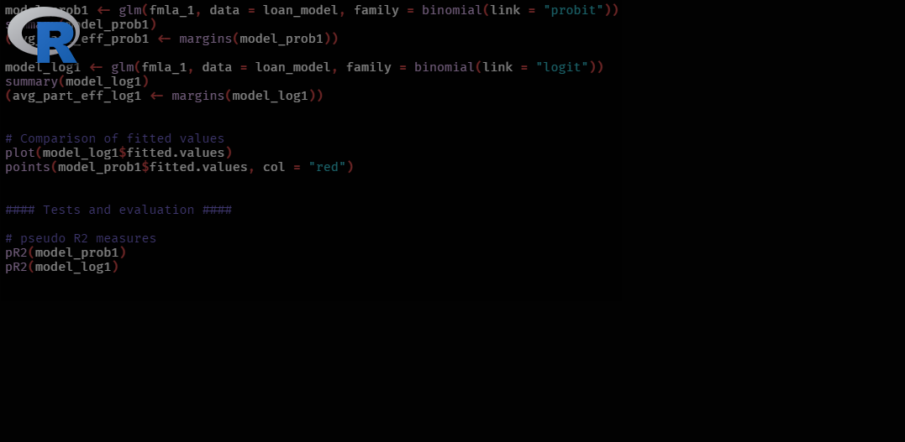
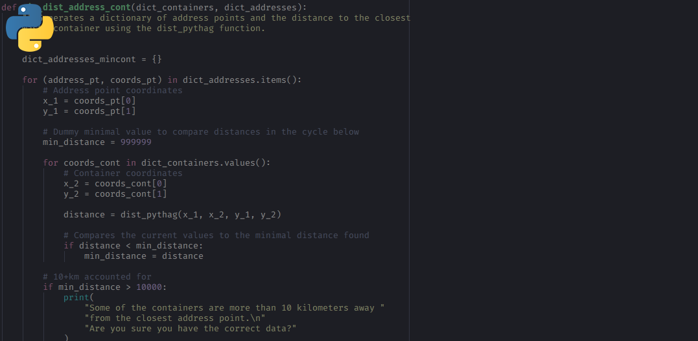
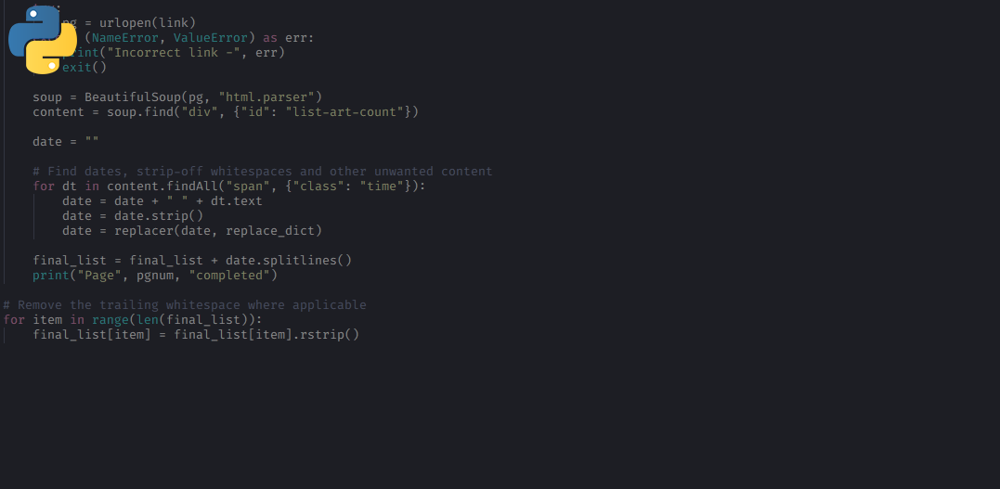
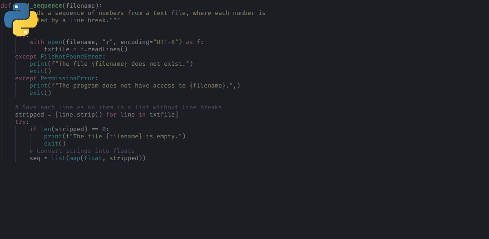

Returns to education
Analyzing the effect of education on income using the NLSY97 database utilizing the instrumental variable approach.
Welcome to my webpage
mranda ~ $

Analyzing the effect of education on income using the NLSY97 database utilizing the instrumental variable approach.

Turning a set of images into an "average" picture. In my case, I used flags of Czech regions and district towns.

Identifying factors affecting loan defaults and estimating the probability of failing to repay on time using logit and probit.

Finding the distance to the closest publicly accessible waste container for each given address point in Prague.

Scraping and plotting the number of COVID-19 related articles per day on a popular Czech news website.

Simple scripts that couldn't quite stand out on their own: Caesar cipher, bubble sort, insertion sort and median.
Read our documentation for advanced keybindings and customization
Documentation